Queries
1 / 10
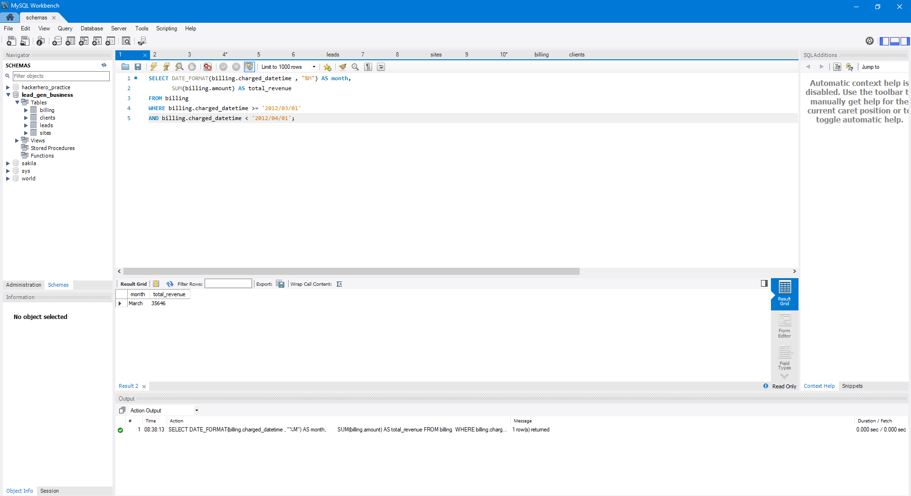
What query would you run to get the total revenue for March of 2012?
SELECT DATE_FORMAT(billing.charged_datetime , "%M") AS month,
SUM(billing.amount) AS total_revenue
FROM billing
WHERE billing.charged_datetime >= '2012/03/01'
AND billing.charged_datetime < '2012/04/01' ;
2 / 10
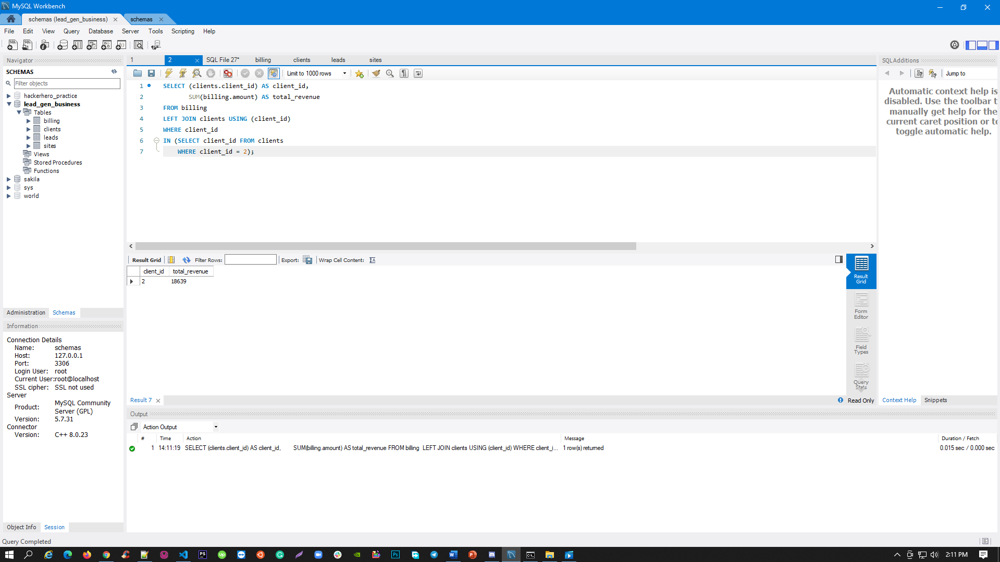
What query would you run to get total revenue collected from the client with an id of 2?
SELECT (clients.client_id) AS client_id,
SUM(billing.amount) AS total_revenue
FROM billing
LEFT JOIN clients ON billing.client_id = clients.client_id
WHERE clients.client_id = 2;
3 / 10
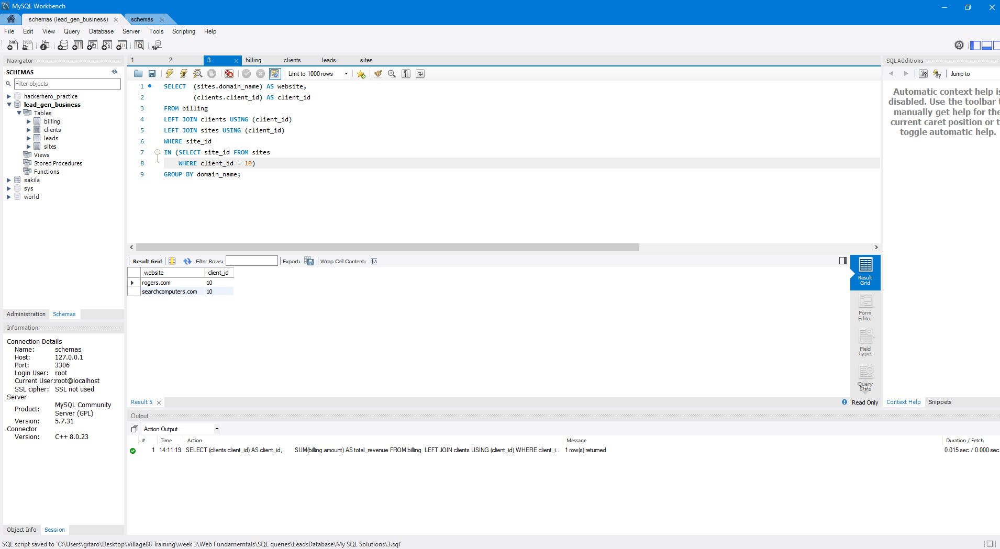
What query would you run to get all the sites that client=10 owns?
SELECT (sites.domain_name) AS website,
(clients.client_id) AS client_id
FROM sites
LEFT JOIN clients ON sites.client_id = clients.client_id
WHERE clients.client_id = 10;
4 / 10
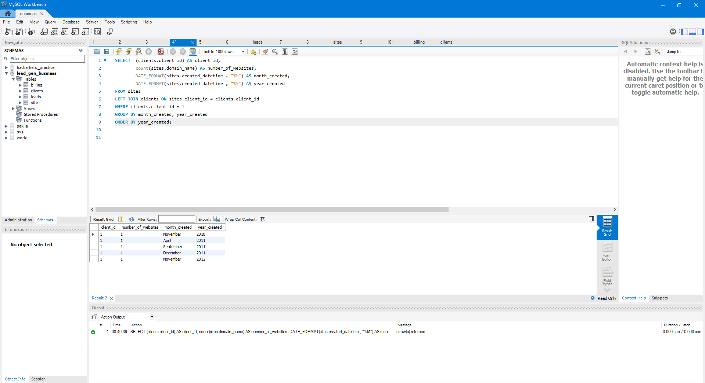
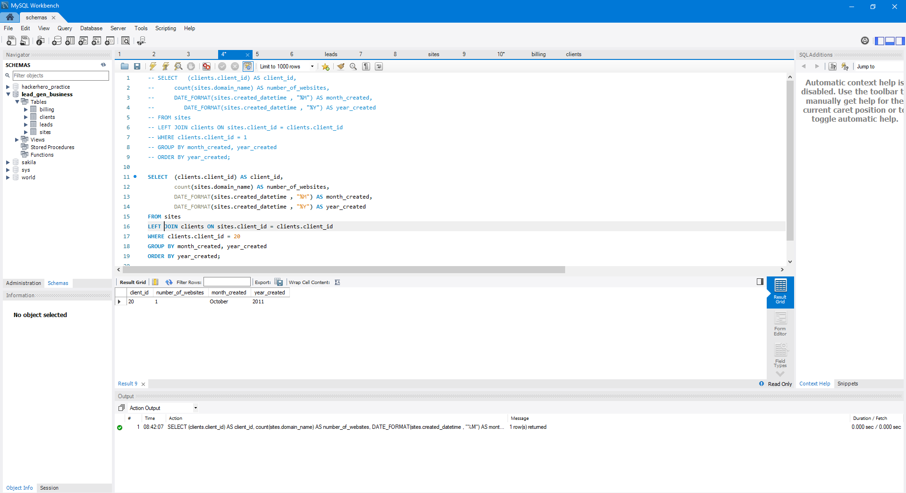
What query would you run to get total # of sites created per month per year for the client with an id of 1? What about for client=20?
SELECT (clients.client_id) AS client_id,
count(sites.domain_name) AS number_of_websites,
DATE_FORMAT(sites.created_datetime , "%M") AS month_created,
DATE_FORMAT(sites.created_datetime , "%Y") AS year_created
FROM sites
LEFT JOIN clients ON sites.client_id = clients.client_id
WHERE clients.client_id = 1
GROUP BY month_created, year_created
ORDER BY year_created;
SELECT (clients.client_id) AS client_id, count(sites.domain_name) AS number_of_websites, DATE_FORMAT(sites.created_datetime , "%M") AS month_created, DATE_FORMAT(sites.created_datetime , "%Y") AS year_created FROM sites LEFT JOIN clients ON sites.client_id = clients.client_id WHERE clients.client_id = 20 GROUP BY month_created, year_created ORDER BY year_created;
SELECT (clients.client_id) AS client_id, count(sites.domain_name) AS number_of_websites, DATE_FORMAT(sites.created_datetime , "%M") AS month_created, DATE_FORMAT(sites.created_datetime , "%Y") AS year_created FROM sites LEFT JOIN clients ON sites.client_id = clients.client_id WHERE clients.client_id = 20 GROUP BY month_created, year_created ORDER BY year_created;
5 / 10
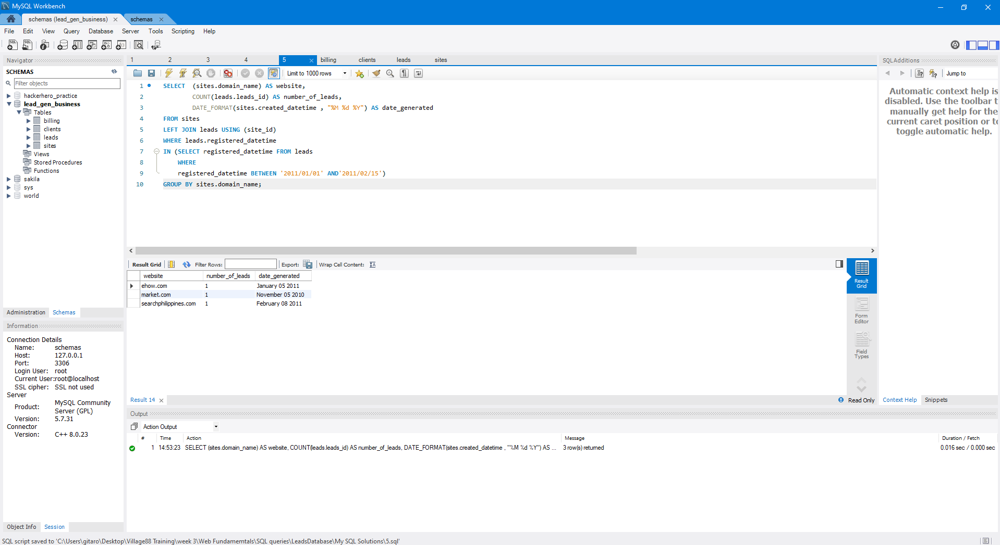
What query would you run to get the total # of leads generated for each of the sites between January 1, 2011 to February
15, 2011?
SELECT (sites.domain_name) AS website,
COUNT(leads.leads_id) AS number_of_leads,
DATE_FORMAT(sites.created_datetime , "%M %d %Y") AS date_generated
FROM sites
LEFT JOIN leads ON sites.site_id = leads.site_id
WHERE leads.registered_datetime BETWEEN "2011-01-01%" AND "2011-02-15%"
GROUP BY sites.domain_name;
6 / 10
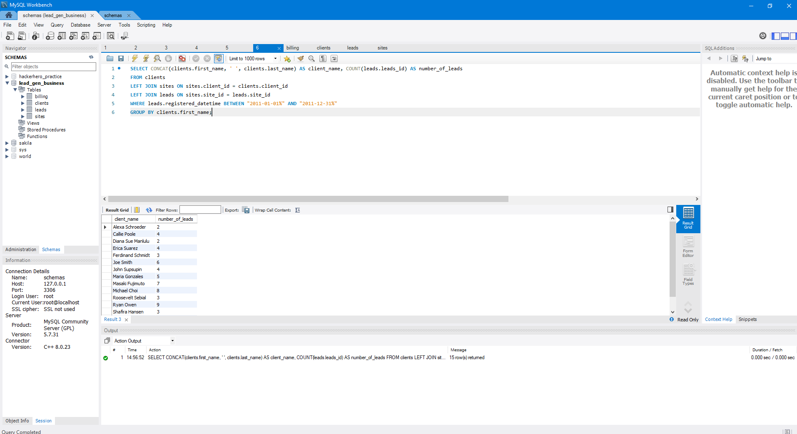
What query would you run to get a list of client names and the total # of leads we've generated for each of our clients
between January 1, 2011 to December 31, 2011?
SELECT CONCAT(clients.first_name, ' ', clients.last_name) AS client_name,
COUNT(leads.leads_id) AS number_of_leads
FROM clients
LEFT JOIN sites ON sites.client_id = clients.client_id
LEFT JOIN leads ON sites.site_id = leads.site_id
WHERE leads.registered_datetime BETWEEN "2011-01-01%" AND "2011-12-31%"
GROUP BY clients.first_name;
7 / 10
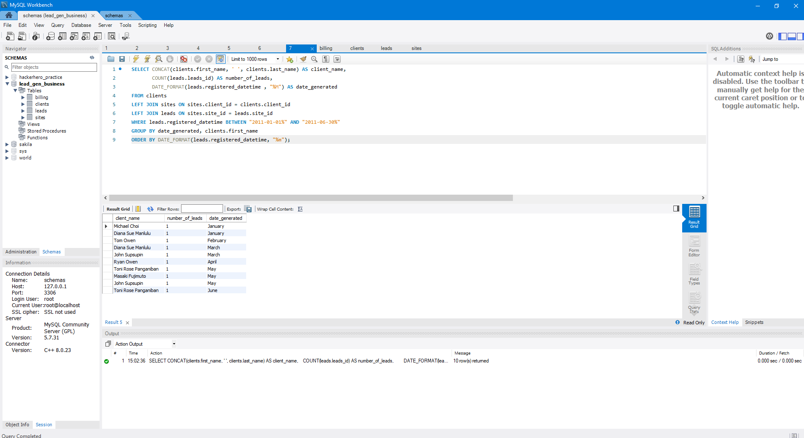
What query would you run to get a list of client names and the total # of leads we've generated for each client each
month between months 1 - 6 of Year 2011?
SELECT CONCAT(clients.first_name, ' ', clients.last_name) AS client_name,
COUNT(leads.leads_id) AS number_of_leads,
DATE_FORMAT(leads.registered_datetime , "%M") AS date_generated
FROM clients
LEFT JOIN sites ON sites.client_id = clients.client_id
LEFT JOIN leads ON sites.site_id = leads.site_id
WHERE leads.registered_datetime BETWEEN "2011-01-01%" AND "2011-06-30%"
GROUP BY date_generated, clients.first_name
ORDER BY DATE_FORMAT(leads.registered_datetime, "%m");
8 / 10
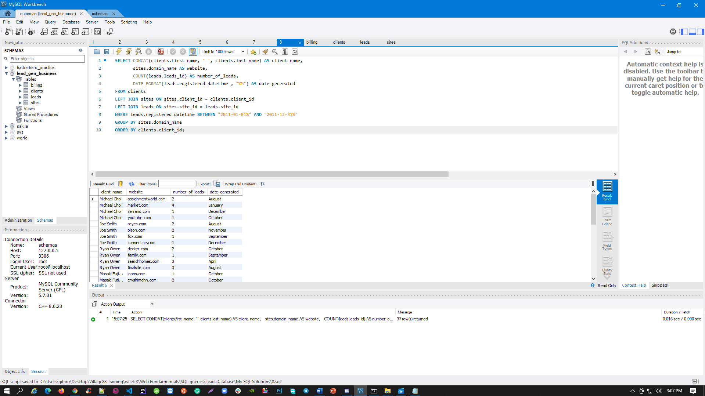
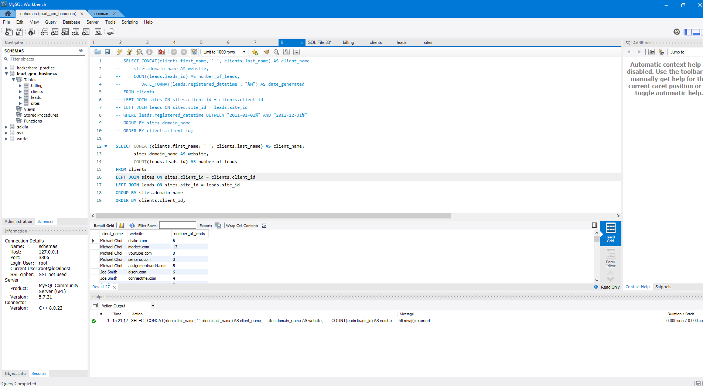
What query would you run to get a list of client names and the total # of leads we've generated for each of our clients'
sites between January 1, 2011 to December 31, 2011? Order this query by client id.
Come up with a second query that
shows all the clients, the site name(s), and the total number of leads generated from each site for all time.
SELECT CONCAT(clients.first_name, ' ', clients.last_name) AS client_name,
sites.domain_name AS website,
COUNT(leads.leads_id) AS number_of_leads,
DATE_FORMAT(leads.registered_datetime , "%M") AS date_generated
FROM clients
LEFT JOIN sites ON sites.client_id = clients.client_id
LEFT JOIN leads ON sites.site_id = leads.site_id
WHERE leads.registered_datetime BETWEEN "2011-01-01%" AND "2011-12-31%"
GROUP BY sites.domain_name
ORDER BY clients.client_id;
SELECT CONCAT(clients.first_name, ' ', clients.last_name) AS client_name, sites.domain_name AS website, COUNT(leads.leads_id) AS number_of_leads FROM clients LEFT JOIN sites ON sites.client_id = clients.client_id LEFT JOIN leads ON sites.site_id = leads.site_id GROUP BY sites.domain_name ORDER BY clients.client_id;
SELECT CONCAT(clients.first_name, ' ', clients.last_name) AS client_name, sites.domain_name AS website, COUNT(leads.leads_id) AS number_of_leads FROM clients LEFT JOIN sites ON sites.client_id = clients.client_id LEFT JOIN leads ON sites.site_id = leads.site_id GROUP BY sites.domain_name ORDER BY clients.client_id;
9 / 10
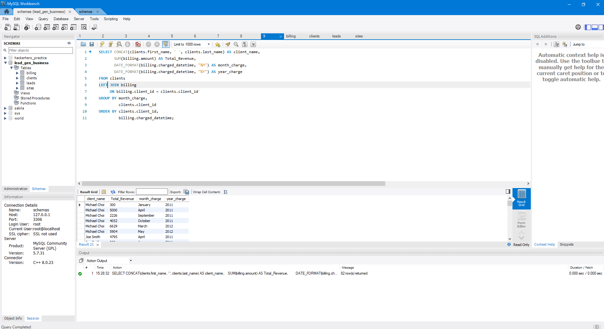
Write a single query that retrieves total revenue collected from each client for each month of the year. Order it by
client id.
SELECT CONCAT(clients.first_name, ' ', clients.last_name) AS client_name,
SUM(billing.amount) AS Total_Revenue,
DATE_FORMAT(billing.charged_datetime, "%M") AS month_charge,
DATE_FORMAT(billing.charged_datetime, "%Y") AS year_charge
FROM clients
LEFT JOIN billing
ON billing.client_id = clients.client_id
GROUP BY month_charge,
clients.client_id
ORDER BY clients.client_id,
billing.charged_datetime;
10 / 10
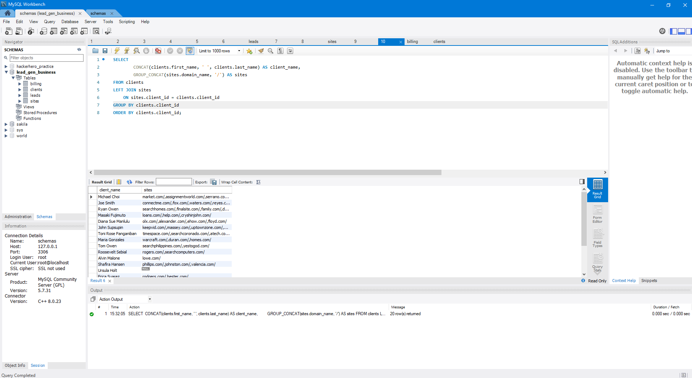
Write a single query that retrieves all the sites that each client owns. Group the results so that each row shows a new
client. It will become clearer when you add a new field called 'sites' that has all the sites that the client owns.
(HINT: use GROUP_CONCAT)
SELECT CONCAT(clients.first_name, ' ', clients.last_name) AS client_name,
GROUP_CONCAT(sites.domain_name, '/') AS sites
FROM clients
LEFT JOIN sites
ON sites.client_id = clients.client_id
GROUP BY clients.client_id
ORDER BY clients.client_id;